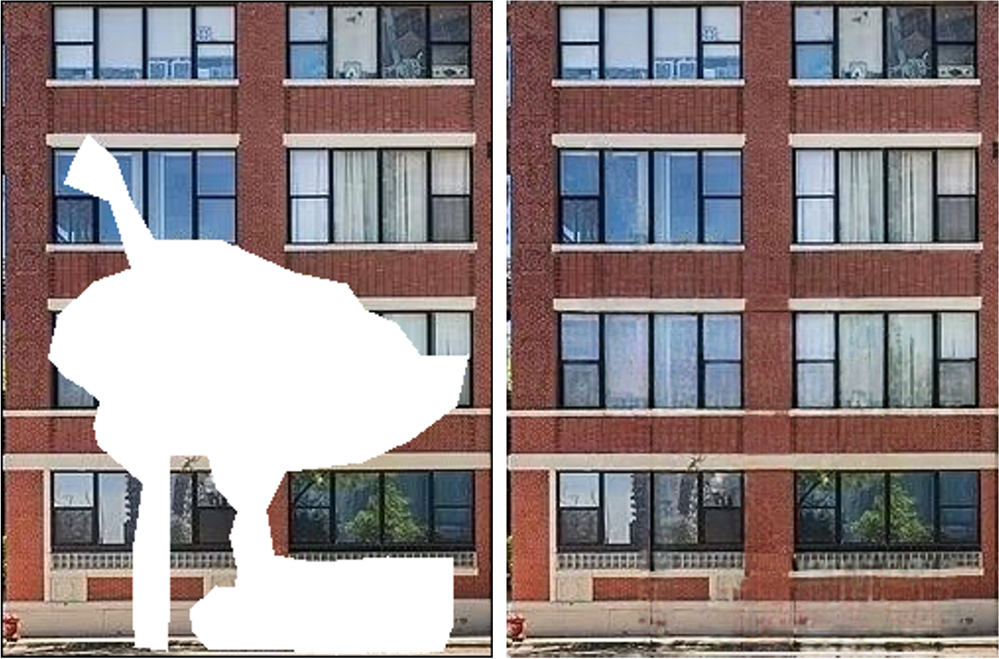
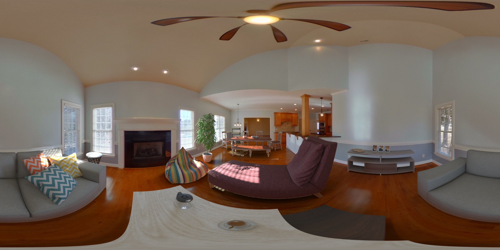
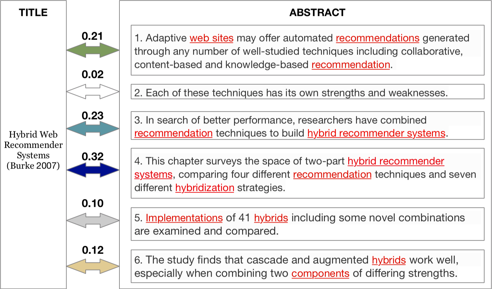

|
I am a second-year MSR student in Robotics Institute at Carnegie Mellon University, supervised by Prof. Srinivasa Narasimhan. I also work with Prof. Martial Hebert, Dr. Sing Bing Kang, and Dr. Tiancheng Zhi. I will be a Ph.D. student at University of Washington, working with Prof. Steve Seitz, Prof. Brian Curless, and Prof. Ira Kemelmacher-Shlizerman. I did my bachelors at Northeastern University , where I worked with Prof. Jean-François Lalonde, Prof. Guibing Guo, and Dr. Fajie Yuan. Email / CV / Google Scholar |

|
|
My research interests lie at the intersection of computer vision and graphics, including neural rendering, inverse rendering and 3D reconstruction. Previously, I worked on developing recommender systems methods. |
|
* indicates equal contribution |
|  |
Bowei Chen, Tiancheng Zhi, Martial Hebert, Srinivasa Narasimhan. ECCV 2022 [Paper] [Supp] [Code] Present a periodicity-aware framework to learn Near-Periodic Patterns (NPP) representation, which enables various applications including NPP completion, resolution-enhanced remapping, and segmentation. |
|  |
Tiancheng Zhi, Bowei Chen, Ivaylo Boyadzhiev, Sing Bing Kang, Martial Hebert, Srinivasa Narasimhan. SIGGRAPH 2022 [Paper] [Website] [Code] Present a weakly supervised appearance decomposition for a single indoor panorama. The applications include furniture insertion, sunlight direction changing, and floor material changing. |
|  |
Guibing Guo, Bowei Chen, Xiaoyan Zhang, Zhirong Liu, Zhenhua Dong, Xiuqiang He. AAAI 2020 [paper] Propose a two-level attentive neural network to capture title-abstract semantics relationships for paper recommendation. |
|
The website's style is borrowed from this amazing guy. |